休暇の付与
休暇の付与は［有休管理］メニューから行います。
［有休管理］はサブメニューによって操作できるアカウント権限が異なります。詳しくは、「権限ごとに操作できるメニュー一覧」をご確認ください。
年度が変わって従業員に新しく有休を付与する場合や、有休取得状況、残業状況を確認する場合等、有休／残業の管理はこのメニューを使用します。
［有休管理］をクリックすると以下のサブメニューが表示されます。
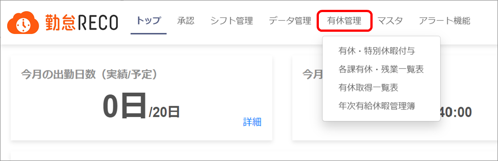
ヒント |
勤怠RECO利用以前の残有休は、「有休付与」または「有休取込」で登録します。
年度が変わって、従業員に新しく有休を付与する場合は、「有休自動付与」をご利用いただくと、勤続年数や週所定労働日数に応じた日数を簡単に設定できます。
有休自動付与機能を利用するため、まずは「有休自動付与マスタ」をご設定ください。
|
有休自動付与マスタを設定する
登録した有休自動付与マスタは、有休・特別休暇付与画面の［有休自動付与］で使用します。
登録は［有休自動付与マスタ］画面で実施します。
ご注意 |
有休自動付与マスタを操作できるのは、システム管理者アカウントのみです。 |
［マスタ］をクリックし、［有休自動付与マスタ］をクリックする
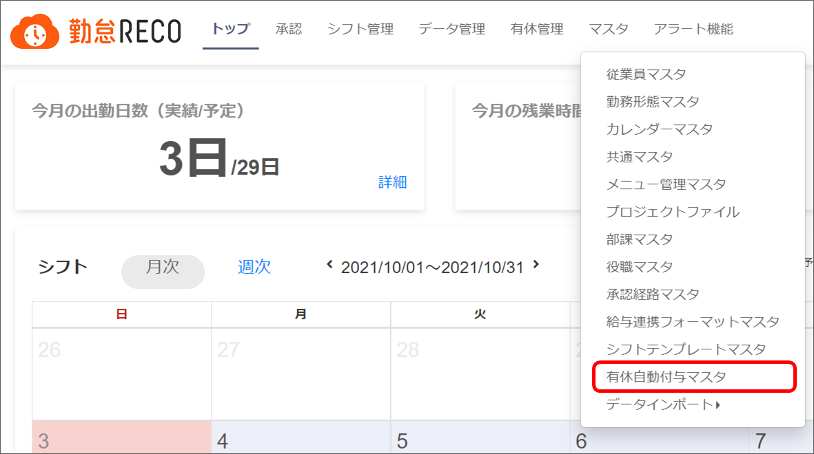
「有休自動付与マスタ」画面が表示されます。
-
［新規作成］ボタンをクリックする
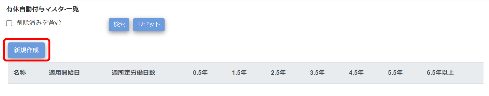
「有休自動付与マスタ-新規作成」画面が表示されます。
-
各項目を入力する
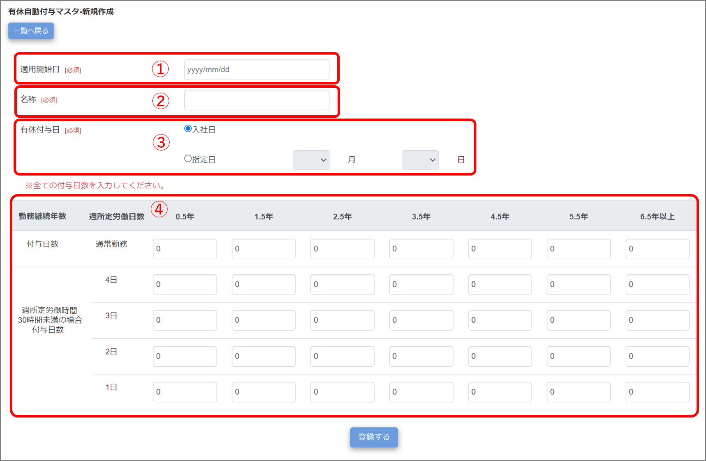
-
適用開始日
有休自動付与マスタの適用を開始する日付を入力します。
既に作成しているマスタと重複した日付は登録できません。
-
名称
有休自動付与マスタ名を設定します（最大255文字）。
-
有休付与日
有休を付与する日を入力します。
「入社日」を設定すると、従業員の入社した日の半年後が有休付与日になります。
「指定日」を設定すると、従業員の入社日に関わらず、指定された日が有休付与日になります。
-
付与日数表
継続勤務年数ごとの付与日数を入力します。
新規作成時、法定年次有休付与日数を満たす日数があらかじめ表示されています。
必要に応じて、付与日数を変更します。
※通常勤務は週所定5日となります。
法定年次有休付与日数を確認する
継続勤務年数 | 0.5年 | 1.5年 | 2.5年 | 3.5年 | 4.5年 | 5.5年 | 6.5年～ |
通常勤務(5日) | 10 | 11 | 12 | 14 | 16 | 18 | 20 |
週所定4日 | 7 | 8 | 9 | 10 | 12 | 13 | 15 |
週所定3日 | 5 | 6 | 6 | 8 | 9 | 10 | 11 |
週所定2日 | 3 | 4 | 4 | 5 | 6 | 6 | 7 |
週所定1日 | 1 | 2 | 2 | 2 | 3 | 3 | 3 |
※2022年3月時点 厚生労働省のHP参照
上記に満たない日数で登録すると、「法定年次有休付与日数（●日）を満たしていません。」と表示されて登録ができません。
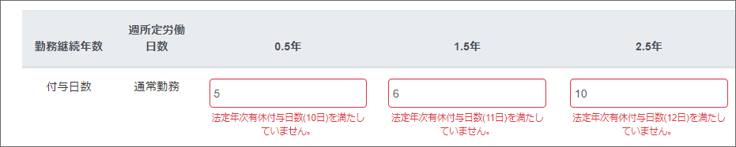
入力内容を確認し、［登録する］ボタンをクリックする
画面上部に「登録が完了しました。」とメッセージが表示され、画面が「有休自動付与マスタ-詳細」画面に切り替わり有休自動付与マスタが登録されます。
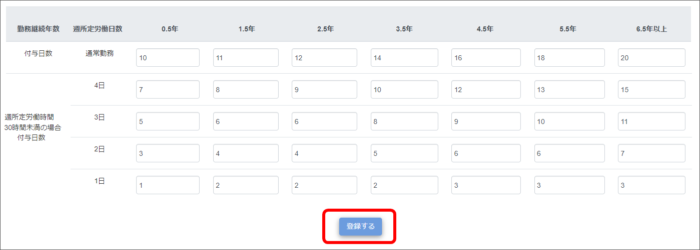
不要になった有休自動付与マスタは［削除］をクリックする
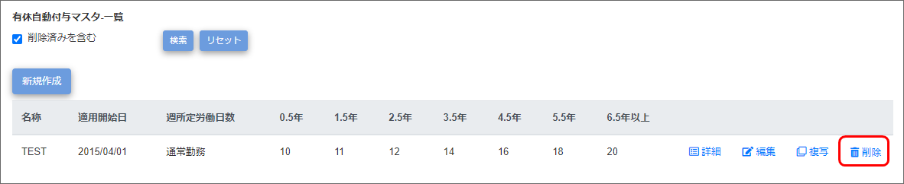
削除を元に戻したい場合は、「削除済みを含む」にチェックを付けて検索し、「有休自動付与マスタ-編集」画面で削除済みチェックを外して登録してください。
有給休暇を付与する
有休の付与は、有休・特別休暇付与画面の［有休付与］タブ画面で実施します。有休付与のための情報を登録し、マスタに反映させます。
ご注意 |
有休を付与できるのは、人事担当者アカウントとシステム管理者アカウントです。 |
有休付与情報を登録する
画面上から手動で、有休付与情報（従業員名やその人の有休付与日、付与日数等）を登録します。
［有休管理］をクリックし、［有休・特別休暇付与］をクリックする
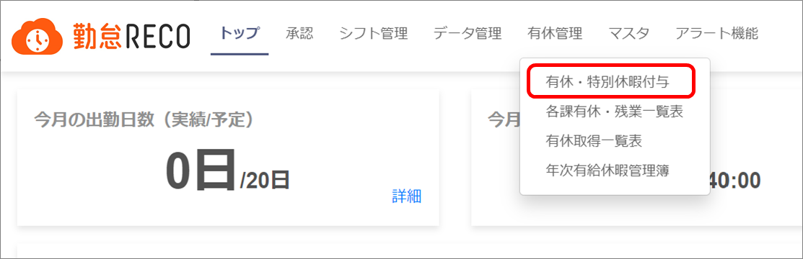
有休・特別休暇付与画面の［有休付与］タブ画面が表示されます。
「年度」に有休を付与する年度を入力する
「年度」の入力は必須です。年度の期間は共通マスタの設定に従います。
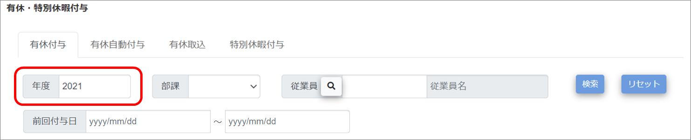
有休を付与する従業員を検索するための検索条件を設定する
ご注意 |
設定した年度と、従業員の「適用開始日」「入社日」「退社日」に不整合があると、対象従業員が在籍していないと判断されて有休を付与できません。
|
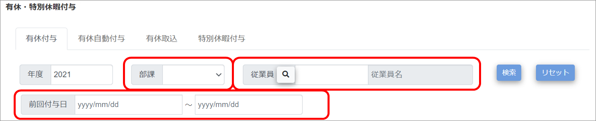
［検索］ボタンをクリックする
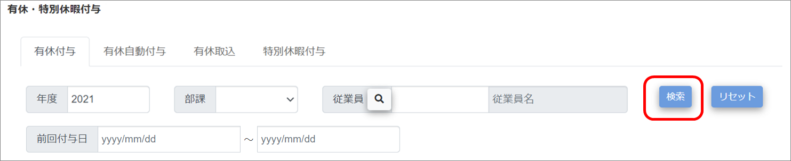
検索条件に該当する従業員が画面下部に一覧表示されます。
「付与日」に有給休暇を付与する年月日を入力する
カレンダーから選択します。
ご注意 |
「当年度実績」に表示されている日付と同じ年月日を入力すると、有休付与情報が上書きされます。
|
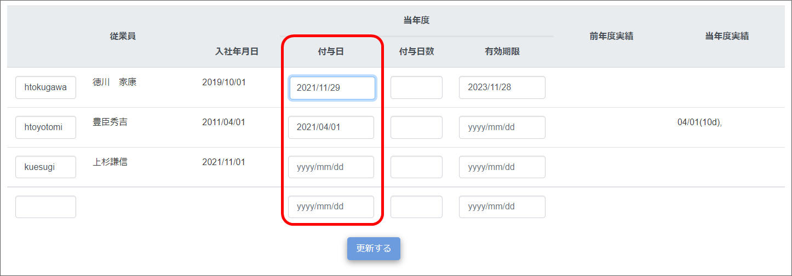
-
「付与日数」に付与する日数を入力する
半日休暇を付与する場合は「0.5」と入力します。
ご注意 |
「付与日数」が空のまま更新するとデータが削除されます。データを残す場合は「０」を入力してください。
|
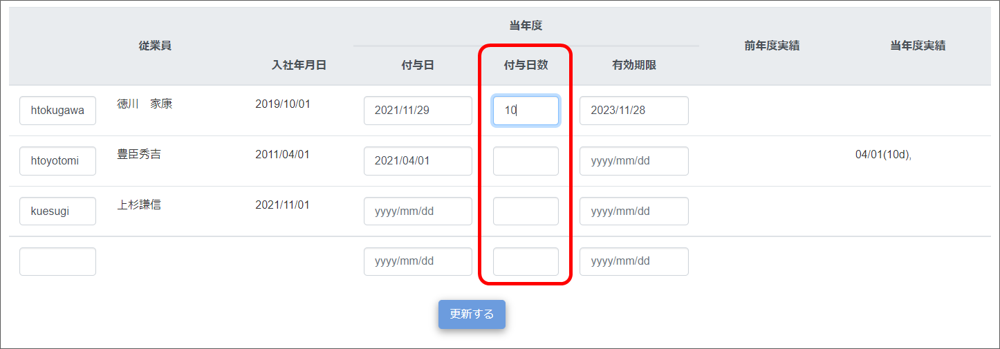
-
「有効期限」に有給休暇の有効期限が終了する年月日を入力する
カレンダーから選択します。
ご注意 |
「有効期限」は「付与日」より後の日付を入力してください。
|
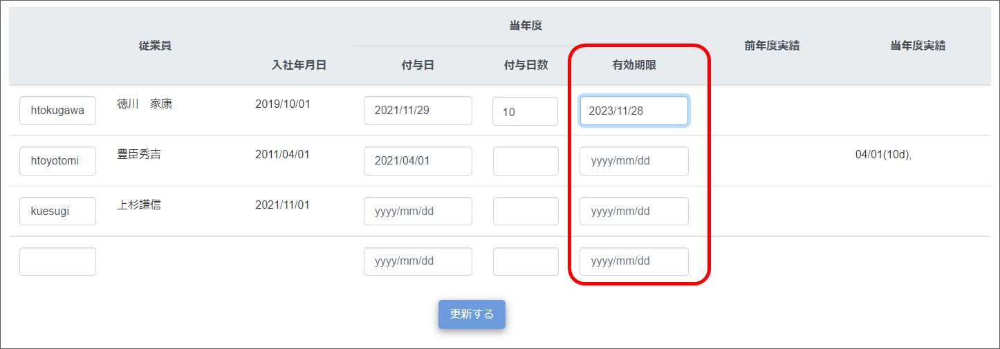
ヒント |
初期状態では「付与日」の2年後の日付が表示されます。 |
-
［更新する］ボタンをクリックする
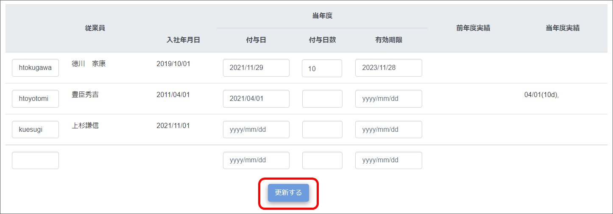
画面上部に「登録が完了しました。」とメッセージが表示され、入力したすべての有休付与情報がマスタデータに登録されます。
ヒント |
エクセルファイルのテンプレートを使って有休付与情報を一括取込できます（有休取込）。
操作方法について詳しくは、「有休付与情報を一括取込する」を参照してください。 |
有休付与情報を一括取込する
エクセルファイルのテンプレートを使って有休付与情報（従業員名やその人の有休付与日、付与日数等）を一括取込します。
［有休管理］をクリックし、［有休・特別休暇付与］をクリックする
有休・特別休暇付与画面の［有休付与］タブ画面が表示されます。
［有休取込］タブをクリックする
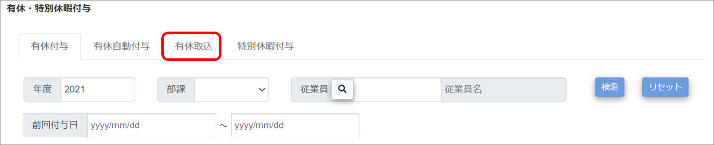
［有休取込］タブ画面が表示されます。
［テンプレートダウンロード］ボタンをクリックし、エクセルファイルをダウンロードする
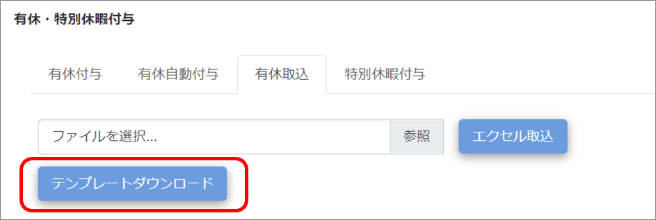
「有休取込テンプレート.xlsx」がダウンロードされます。
ご注意 |
ここでダウンロードしたエクセルファイルのテンプレートのみ取り込み可能です。その他のエクセルファイルは取り込みできません。 ファイルの拡張子が「.xls」の場合は取り込みできません。拡張子は「.xlsx」にしてください。 取込行のセルの一部がかけていると、取込エラーとなる場合があります。取込まない従業員データは、行ごと削除してください。
|
ダウンロードした「有休取込テンプレート.xlsx」を開く
ご注意 |
エクセルファイルの1シート目のみ取り込みます。1シート目に有休付与情報を入力してください。 |
「付与年度」の色のついたセルに有休を付与する年度を入力する
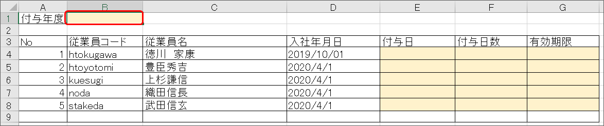
登録が必要な従業員について色のついたに有休付与情報を入力する
「付与日」：有給休暇を付与する年月日を入力します。
「付与日数」：付与する有給休暇の日数を入力します。半日休暇を付与する場合は「0.5」と入力します。
「有効期限」：有給休暇の有効期限が終了する年月日を入力します。
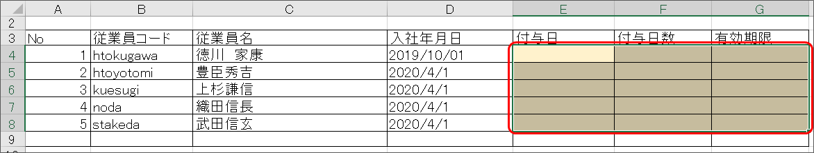
ご注意 |
有休を付与しない従業員のセルは空の状態にしてください。 |
すべての有休付与情報の入力が完了したら、名前を付けて保存または上書保存する
［有休取込］タブ画面の［参照］をクリックし、保存したエクセルファイルを選択して開く
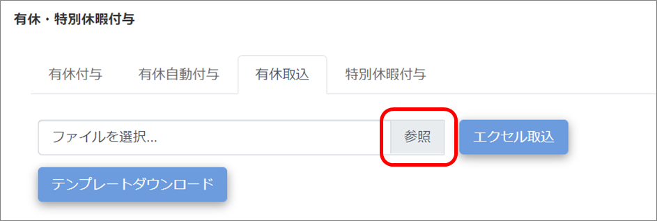
選択したファイルのファイル名が表示されていることを確認し、［エクセル取込］ボタンをクリックする
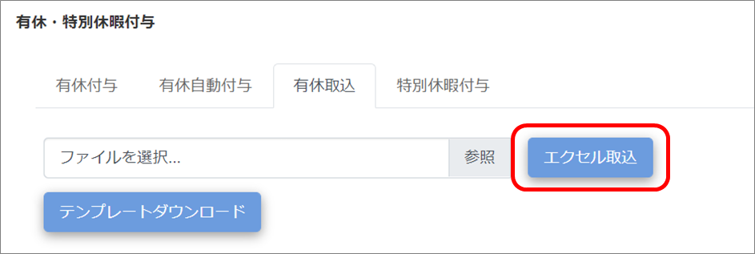
画面上部に「〇件の有休付与が完了しました。」とメッセージが表示され、エクセルファイルのテンプレートに入力された有休付与情報が一括で登録されます。
有休自動付与を行う
有休自動付与マスタを使って有休付与情報（従業員名やその人の有休付与日、付与日数等）を一括登録します。
ヒント |
・［有休・特別休暇付与］との違いは？
本メニューでは有休自動付与マスタに従って、付与日、付与日数、有効期限の3つが自動入力されます。年度更新のたびに、自動で有休が付与される機能はございませんのでご注意ください。
|
［有休管理］をクリックし、［有休・特別休暇付与］をクリックする
有休・特別休暇付与画面の［有休付与］タブ画面が表示されます。
［有休自動付与］タブをクリックする
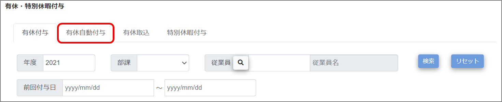
［有休自動付与］タブ画面が表示されます。
ご注意 |
使用可能な有休自動付与マスタが存在しない場合、上部にメッセージが表示されます。［有休自動付与マスタ］をクリックして、マスタの登録を行ってください。
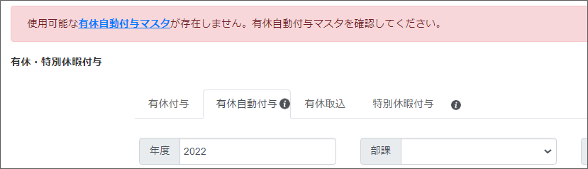
|
「年度」に有休を付与する年度を入力する
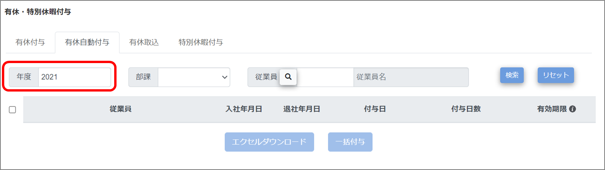
有休を付与する従業員を検索するための検索条件を設定する
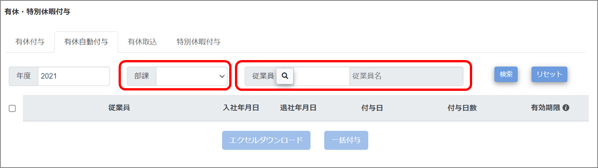
［検索］ボタンをクリックする
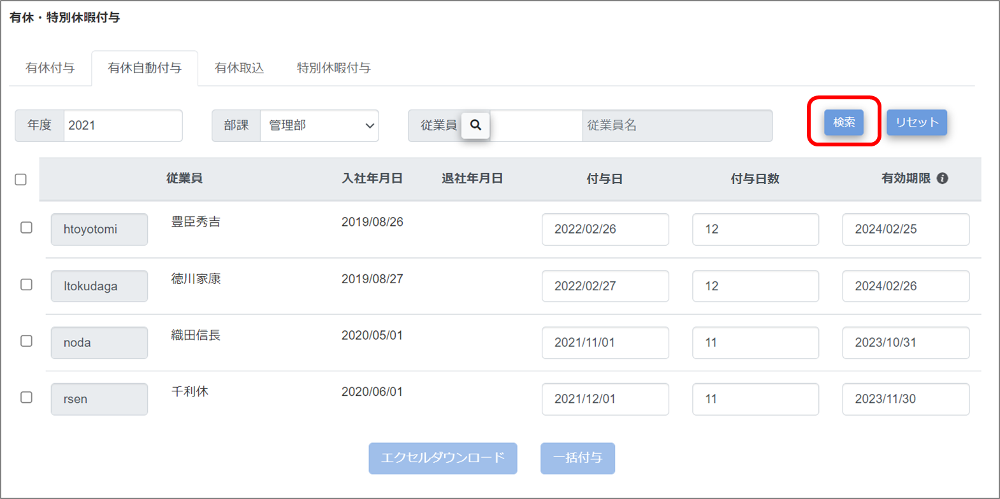
検索条件に該当する従業員が画面下部に一覧表示され、有休自動付与マスタに従って「付与日」「付与日数」が表示されます。
ご注意 |
従業員マスタに「週所定労働日数」と「入社年月日」が登録されていない場合は、勤続年数が計算できないため、「付与日数」は表示されません。
|
-
「付与日」「付与日数」「有効期限」を必要に応じて変更します。
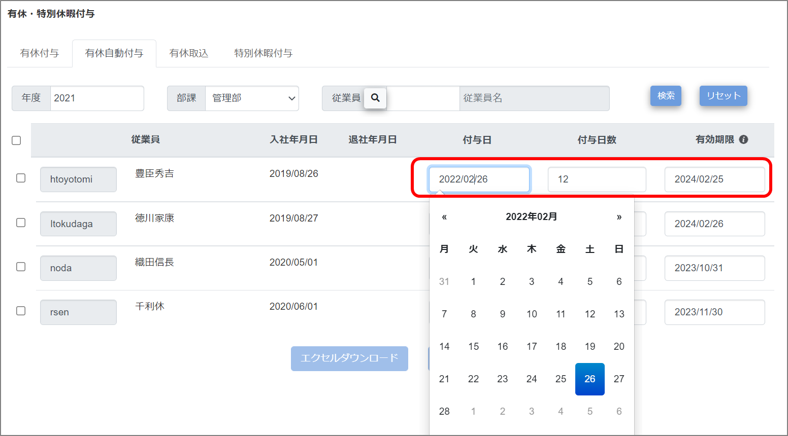
ご注意 |
「有効期限」は「付与日」より後の日付を入力してください。
|
ヒント |
初期状態では「付与日」の2年後の日付が「有効期限」に表示されます。 |
-
付与対象者にチェックをつけ、［一括付与］ボタンをクリックする
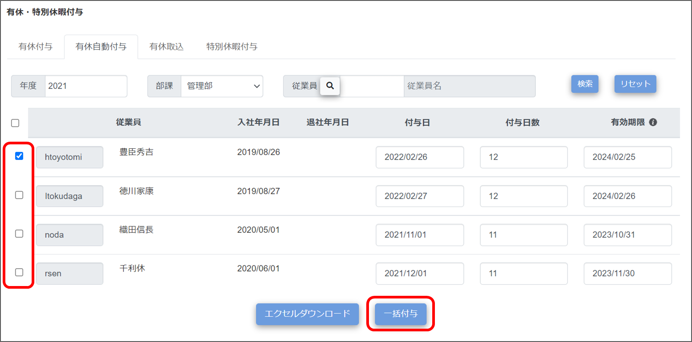
画面上部に「●件の有休付与が完了しました。」とメッセージが表示され、入力したすべての有休付与情報がマスタデータに登録されます。
ご注意 |
既に有休を付与した年月日には、有休を付与できません。付与日や付与日数を修正する場合は、「有休付与情報を上書きする」より修正を行います。
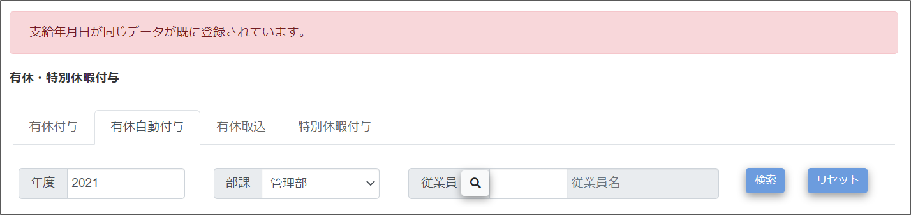
|
ヒント |
対象者にチェックをつけ、［エクセルダウンロード］ボタンをクリックすると、画面に表示された内容をダウンロードできます。
ダウンロードしたエクセルは、［有休取込］のテンプレートと同じレイアウトのため、そのまま取り込むこともできます
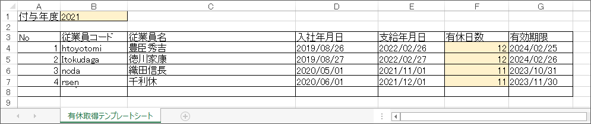
|
有休付与情報を上書きする
登録済みの有休付与情報を修正して上書きします。
修正できる情報は、「付与日数」と「有効期限」です。
［有休管理］をクリックし、［有休・特別休暇付与］をクリックする

有休・特別休暇付与画面の［有休付与］タブ画面が表示されます。
有休付与情報を上書き修正する従業員を検索し、表示する
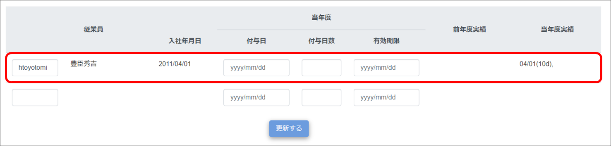
「当年度実績」をクリックする
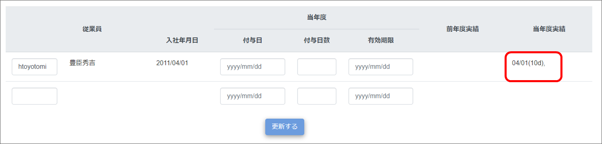
「付与日」「付与日数」「有効期限」に登録されている情報が表示されます。
「付与日数」、「有効期限」の情報を修正する
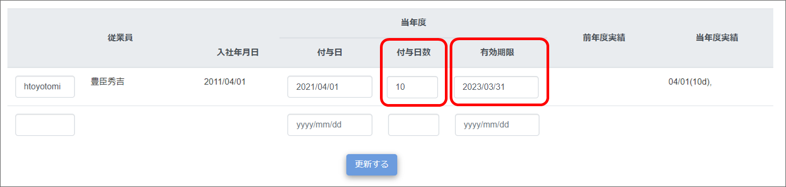
［更新する］ボタンをクリックする
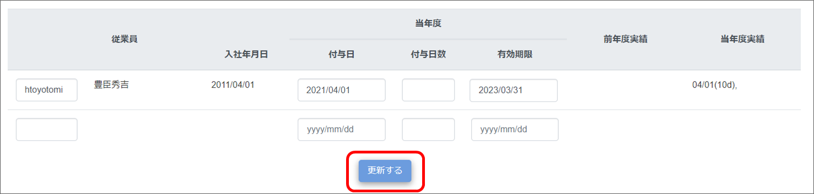
画面上部に「登録が完了しました。」とメッセージが表示され、修正した有休付与情報がマスタデータに上書き登録されます。
有休付与情報を削除する
［有休管理］をクリックし、［有休・特別休暇付与］をクリックする
有休・特別休暇付与画面の［有休付与］タブ画面が表示されます。
有休付与情報を削除する従業員を検索し、表示する
「当年度実績」をクリックする
「付与日」「付与日数」「有効期限」に登録されている情報が表示されます。
「付与日数」の欄を空の状態にする
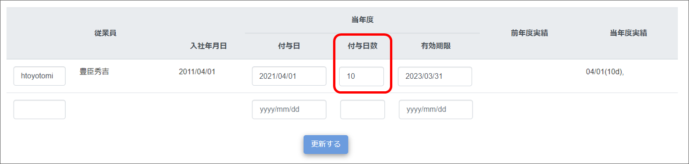
［更新する］ボタンをクリックする
画面上部に「登録が完了しました。」とメッセージが表示され、有休付与情報が削除されます。
［有休付与］タブ画面について
管理用トップ画面のメニュー［有休管理］＞［有休・特別休暇付与］をクリックすると、［有休付与］タブ画面が表示されます。
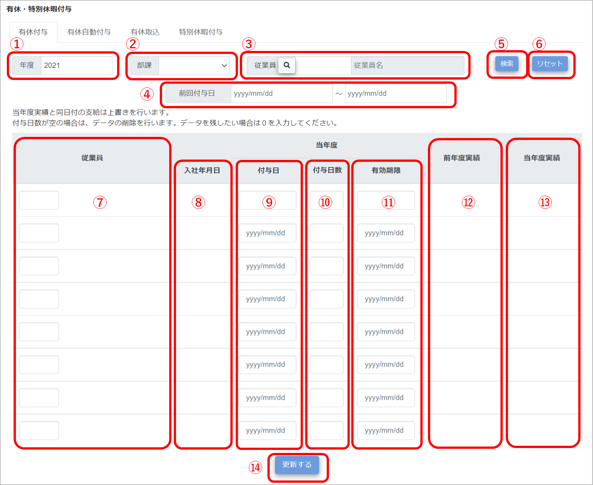
年度：
※必須入力項目
有給休暇を付与する年度を入力します。
部課：
対象者を部課で絞り込む場合に、ドロップダウンリストから部課を選択します。
従業員：
対象者を従業員コードで絞り込む場合に、従業員コードを入力します。
 のボタンをクリックすると、従業員コードのリストが表示されます。
のボタンをクリックすると、従業員コードのリストが表示されます。
前回付与日：
対象者を前回付与した日付で絞り込む場合に、年月日をカレンダーから選択します。
［検索］ボタン：
「年度」（必要に応じて「部課」・「従業員」・「前回付与日」）を設定して［検索］ボタンをクリックすると、下部に該当する従業員が一覧表示されます。
［リセット］ボタン：
設定した検索条件をすべてリセットします。
従業員：
従業員名が表示されます。
左側の枠内に従業員コードを入力すると該当する従業員が表示されます。
入社年月日：
従業員の入社年月日が表示されます。
付与日：
有給休暇を付与する年月日をカレンダーから選択します。
付与日数：
付与する有給休暇の日数を入力します。
有効期限：
有給休暇の有効期限が終了する年月日をカレンダーから選択します。
前年度実績：
従業員の前年度分の付与実績が「付与日（付与した付与日数）」の形式で表示されます。
当年度実績：
従業員の今年度分の付与実績が「付与日（付与した付与日数）」の形式で表示されます。
表示されている付与日をクリックすると、有休付与情報が自動的に入力されます。
［更新する］ボタン：
入力した有休付与情報をマスタデータに登録します。
特別休暇を付与する
特別休暇の付与は、有休・特別休暇付与画面の［特別休暇付与］タブ画面で実施します。
特別休暇付与は、慶弔休暇などで有給/無給休暇を付与する際に使用します。特別休暇はトップ画面の「有休（残日数/付与日数）」表示には反映されず、詳細リンクから休暇区分を指定することで残日数/付与日数を確認できます。
ご注意 |
特別休暇を付与できるのは、人事担当者アカウントとシステム管理者アカウントです。 |
-
［有休管理］をクリックし、［有休・特別休暇付与］をクリックする
有休・特別休暇付与画面の［有休付与］タブ画面が表示されます。
-
［特別休暇付与］タブをクリックする
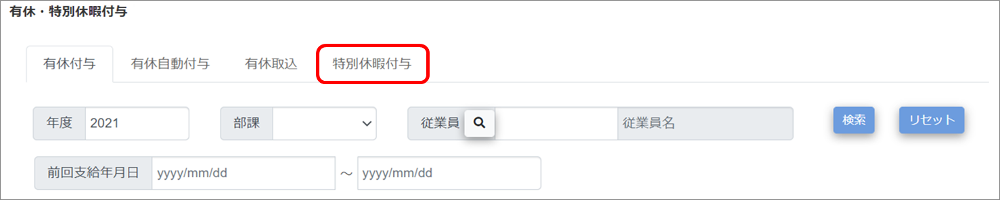
［特別休暇付与］タブ画面が表示されます。
-
「年度」に特別休暇を付与する年度を入力する
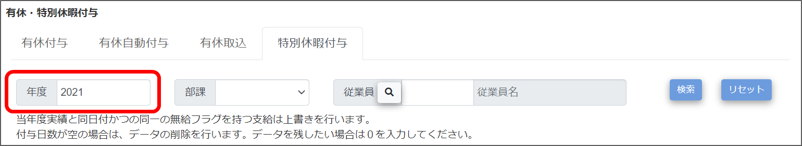
-
特別休暇を付与する従業員を検索するための検索条件を設定する
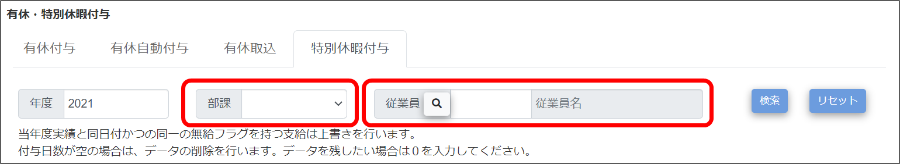
-
［検索］ボタンをクリックする
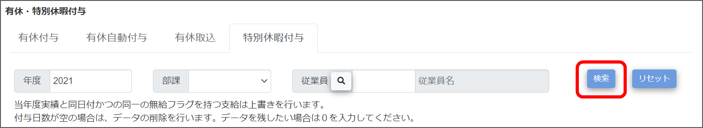
検索条件に該当する従業員が画面下部に一覧表示されます。
-
「特別休暇付与日」に特別休暇を付与する年月日を入力する
ご注意 |
「当年度実績」に表示されている日付と同じ年月日を入力すると、特別休暇付与情報が上書きされます。 |
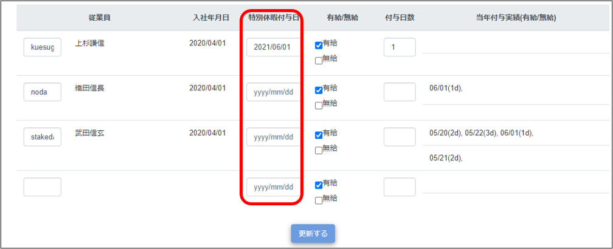
-
付与する特別休暇が有給か無給かを選択する
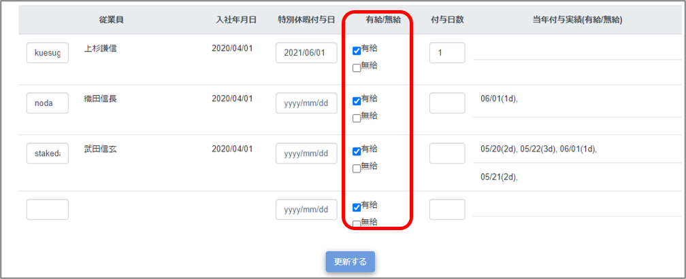
-
「付与日数」に付与する日数を入力する
ご注意 |
「付与日数」が空のまま更新するとデータが削除されます。データを残す場合は「０」を入力してください。 |
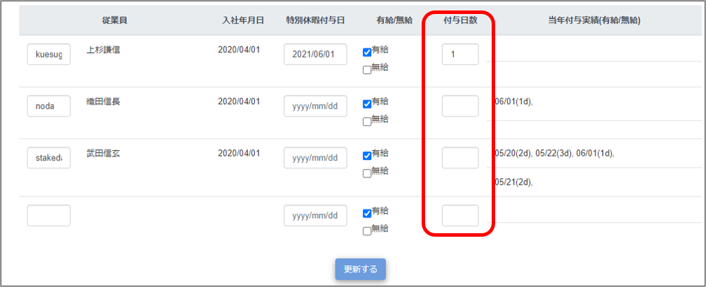
-
［更新する］ボタンをクリックする
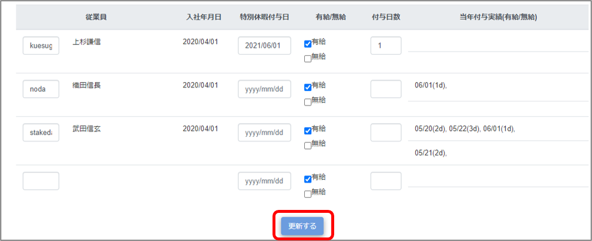
画面上部に「登録が完了しました。」とメッセージが表示され、入力したすべての特別休暇付与情報がマスタデータに登録されます
特別休暇付与情報を上書きする
登録済みの特別休暇付与情報を修正して上書きします。修正できる情報は、「付与日数」です。
-
特別休暇付与情報を上書き修正する従業員を検索し、表示する
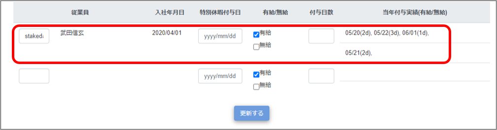
-
「当年付与実績(有給/無給)」欄の修正したい日付をクリックする
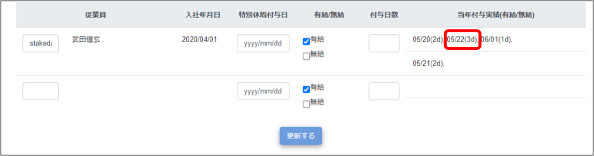
「特別休暇付与日」「付与日数」に登録されている情報が表示されます。
-
「有給/無給」、「付与日数」の情報を修正する
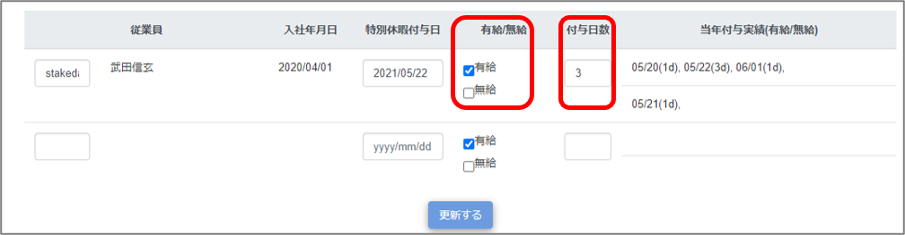
-
［更新する］ボタンをクリックする
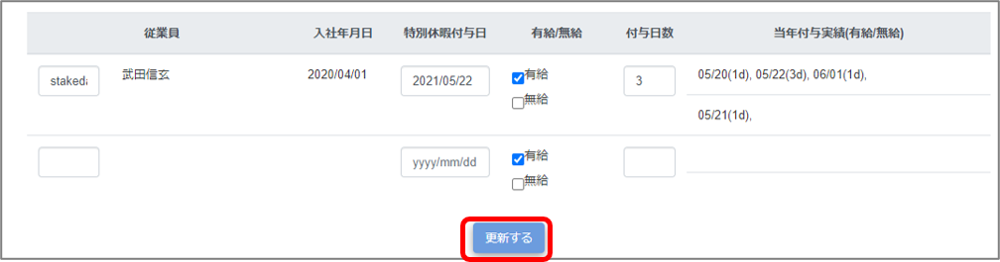
画面上部に「登録が完了しました。」とメッセージが表示され、修正した特別休暇付与情報がマスタデータに上書き登録されます。
特別休暇付与情報を削除する
-
特別休暇付与情報を削除する従業員を検索し、表示する
-
「当年付与実績(有給/無給)」欄の削除したい日付をクリックする
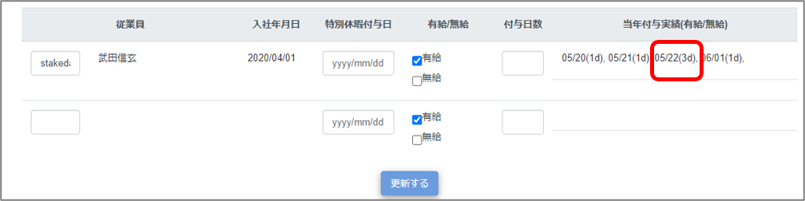
「特別休暇付与日」「付与日数」に登録されている情報が表示されます。
-
「付与日数」の欄を空の状態にする
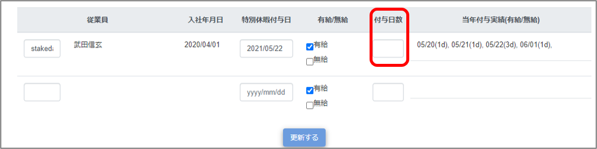
-
［更新する］ボタンをクリックする
画面上部に「登録が完了しました。」とメッセージが表示され、選択した特別休暇付与情報が削除されます。
［特別休暇付与］タブ画面について
管理用トップ画面のメニュー［有休管理］＞［有休・特別休暇付与］をクリックすると、［有休付与］タブ画面が表示されます。
［特別休暇付与］タブをクリックすると、［特別休暇付与］タブ画面が表示されます。
年度：
※必須入力項目
特別休暇を付与する年度を入力します。
部課：
対象者を部課で絞り込む場合に、ドロップダウンリストから部課を選択します。
従業員：
対象者を従業員コードで絞り込む場合に、従業員コードを入力します。
をクリックすると、従業員コードのリストが表示されます。
［検索］ボタン：
「年度」（必要に応じて「部課」・「従業員」）を設定して［検索］ボタンをクリックすると、下部に該当する従業員が一覧表示されます。
［リセット］ボタン：
設定した検索条件をすべてリセットします。
従業員：
従業員名が表示されます。
左側の枠内に従業員コードを入力すると該当する従業員が表示されます。
入社年月日：
従業員の入社年月日が表示されます。
特別休暇付与日：
特別休暇を付与する年月日をカレンダーから選択します。
有給/無給：
付与する特別休暇が有給か無給かを選択します。
付与日数：
付与する特別休暇の日数を入力します。
当年付与実績（有給/無給）：
従業員の今年度分の付与実績が「付与日（付与した特別休暇日数）」の形式で表示されます。
有給の特別休暇の付与実績が上段に、無給の特別休暇の付与実績が下段に表示されます。
［更新する］ボタン：
入力した特別休暇付与情報をマスタデータに登録します。